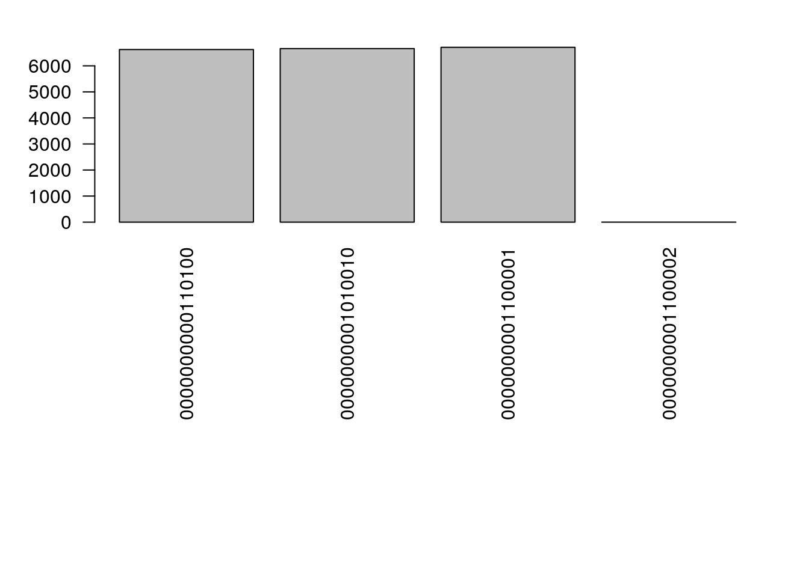

Implementation of Degree Sequence Graph Sampling Algorithm
George G. Vega Yon
March 18th, 2021
Implementation
This algorithm rewires a graph while preserving its degree sequence, i.e., each sampled graph’s adjacency matrix will have the same rows and columns
# This is a degree-sequence-preserving sampling algorith
sample_graph <- function(x, n = 15L * sum(x != 0L)) {
# Obtaining the positions of the non-zero elements
ids <- which(x != 0L, arr.ind = TRUE)
# Sampling the ends
new_ids <- sample.int(nrow(ids), size = n * 2L, replace = TRUE)
new_ids <- matrix(new_ids, ncol = 2L)
for (i in 1:n)
ids[,2][new_ids[i,]] <- ids[,2][new_ids[i,2:1]]
ans <- matrix(0, nrow = nrow(x), ncol =ncol(x))
for (i in 1:nrow(ids))
ans[ids[i,,drop=FALSE]] <- ans[ids[i,,drop=FALSE]] + 1
ans
}First test: Must preserve degree sequence
# Testing
set.seed(1231)
N <- 4
# Baseline graph
x <- matrix(0L, N, N)
x[sample.int(N^2, N)] <- 1L
deg_seq0 <- cbind(rowSums(x), colSums(x))
ntests <- 1e3
npass <- 0
for (i in 1:ntests) {
x2 <- sample_graph(x)
npass <- npass + all(deg_seq0 == cbind(rowSums(x2), colSums(x2)))
}
message(npass, " out of ", ntests, " have the same sequence")## 1000 out of 1000 have the same sequenceSecond test: Must be uniformly distributed
Is it???
ntests <- 2e4
samps <- NULL
for (i in 1:ntests) {
x <- sample_graph(x)
samps <- c(samps, paste(as.vector(x), collapse= ""))
}
op <- par(las=2, mai = par("mai")*c(3,1,.5,1))
barplot(table(samps), horiz = FALSE)
par(op)